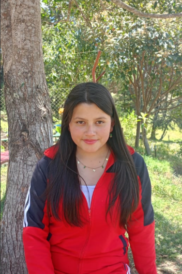
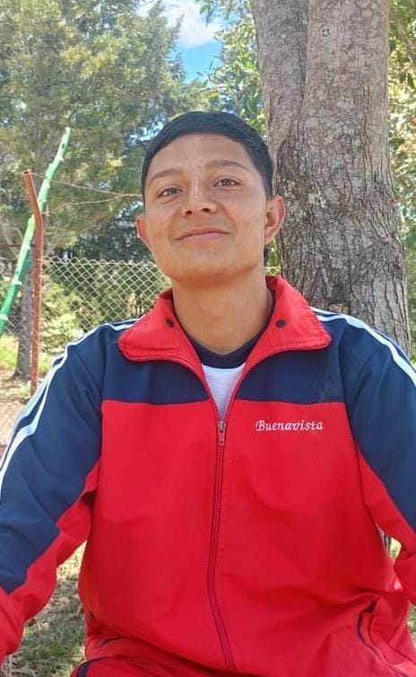
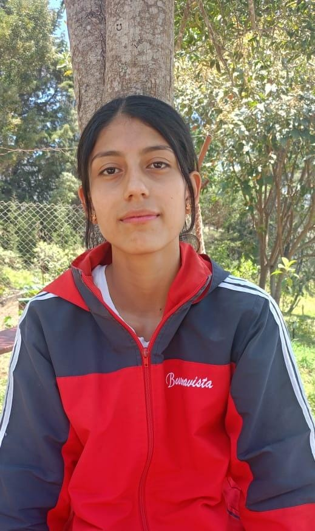

Te Contamos Quiénes Somos y Qué Hacemos
Poguiagro es un proyecto enfocado en la agricultura sostenible y en la mejora de la producción agrícola en el municipio de Buenavista, Boyacá. Nuestro objetivo es proporcionar información valiosa y herramientas interactivas para los agricultores locales, ayudando a optimizar sus cultivos y a promover prácticas agrícolas responsables.

Leidy Dayana Arévalo Cano
Estudiante del Colegio José María Silva Salazar, apasionada por la agricultura sostenible.

Gabriel Alejandro Rodríguez Peña
Estudiante del Colegio José María Silva Salazar, interesado en la tecnología agrícola.

Jessica Alexandra Wilchez Camacho
Estudiante del Colegio José María Silva Salazar, enfocada en la investigación agrícola.
“El buen agricultor no solo cultiva su tierra, sino también su mente.”
“La agricultura es el arte de transformar la naturaleza en abundancia.”
“Conocimiento y práctica: el camino hacia una agricultura exitosa.”
“El futuro de la agricultura es verde y sostenible.”